Removing Shrink Wrap, Foam, and Cable Ties
This topic includes information about how to remove shrink wrap, foam, and cable ties from the instrument, after it has been uncrated and moved.
Note: See
Uncrating and Moving the Instrument for more information about uncrating and moving the instrument.
Important: During this procedure, after you remove cable ties for the pipettor and pick-and-place gantries, manually move the gantries to be sure harnesses have been routed properly and so that there are no movement errors. Observe the spacing between pipettors 2 and 3 over their full range of motion, and pay specific attention to when they are both in the far rear position at the lowest pipetting position. While they are in that position, be sure they do not touch, to eliminate movement errors while running the stress test.
| Removing Shrink Wrap, Foam, and Cable Ties |
|---|
| Step 1: Remove Shrink Wrap and Foam |
| Step 2: Remove Cable Ties |
Step 1: Remove Shrink Wrap and Foam
- Remove the shrink wrap.
- Remove the protective blue film from the silver door handles and sample processing unit (SPU) covers.
- Remove foam from the monitor arm.
- Open the top left cover.
- Remove foam from between the DispoTip cover and the top left cover.
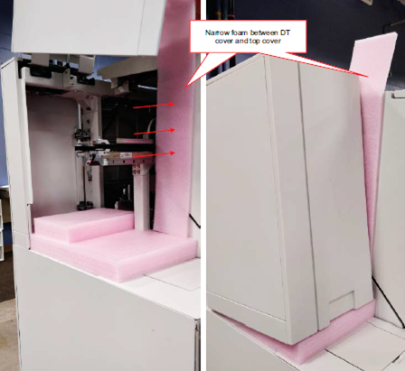
- Remove foam from under the DispoTip and from around the pipettor gantry.
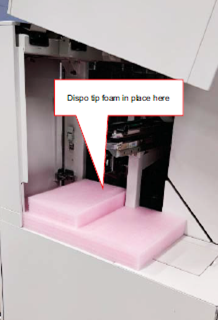
- Remove foam from under the top covers.
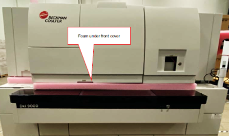
- Remove the plastic film from the SPU cover.
Step 2: Remove Cable Ties
- Open all upper main covers to gain access to the inside of the instrument.
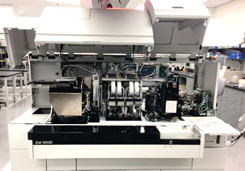
- Cut the cable tie to release the wash wheel arms.
Caution: Do not pinch any wires or belts.
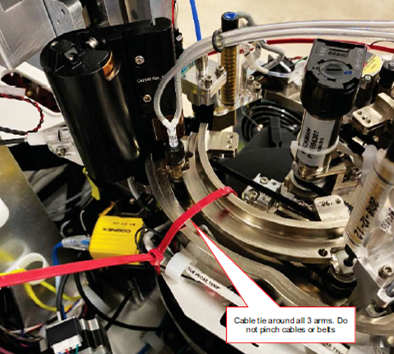
- Inside the right side panel, cut the cable tie around the lower wash wheel arm spring to release the springs.
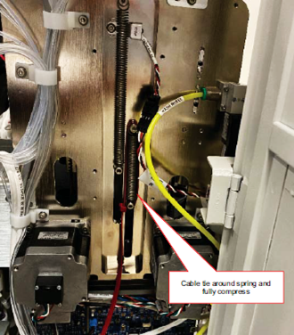
- Leave the upper right cover open. Close the right side cover of the instrument.
- Cut the cable tie around the belt near the pulley that is located on the back of the substrate loader to release the substrate loader probe Z axis.
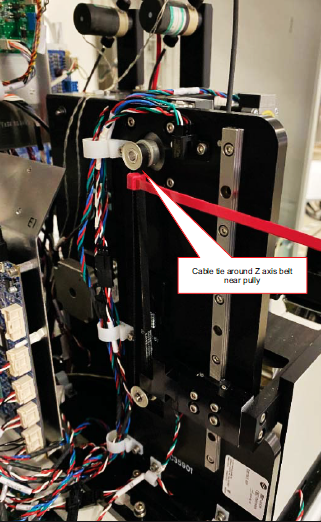
- Cut the cable tie around the belt near the pulley of the substrate loader door Z axis.
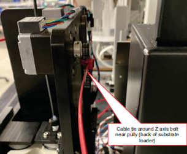
- Open the SPU cover.
- Remove the foam block to release the SPU gate.
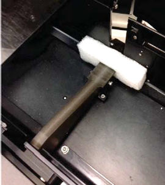
- Open the top right SPU cover.
- Cut the cable tie to release the pusher.
- Pull the handle located underneath and in the middle of the SPU to open the SPU toward you. Pivot it outward.
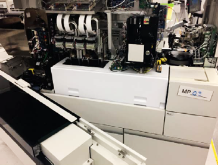
- Pull the panel that covers the lower half of the reagent storage module (RSM) cover straight out to remove it.
- Grasp the built-in handles on the RSM cover and lift it straight up to remove it.
- Cut the cable tie and remove the bubble wrap or foam to release the RSM gripper.
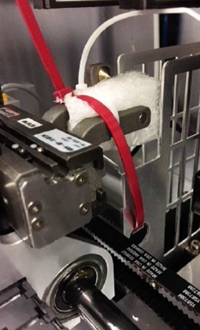
- Manually move the gripper to the home position in the lower left corner of the RSM.
- Replace the two covers over the RSM.
- Use the handle on the bottom of the SPU to close the SPU.
Important: Firmly close the SPU. Be sure the SPU is fully seated and properly latched so that it cannot swing open without pulling the release handle.
- Cut the cable tie around the belt near the pulley to release the pipettor Y-axis belt. Repeat for the Y axis of each of the three remaining pipettors.
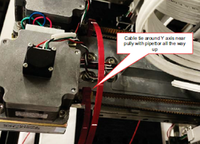
- One at a time, cut the cable ties around the Z-axis belt at the bottom near the pulley to release the reagent pipettor's Z axis. Repeat for all four pipettors.
Caution: Be sure there is adequate support for the pipettor to prevent it from crashing down and getting damaged.Important: After you remove cable ties for the pipettor gantries, manually move the gantries to be sure harnesses have been routed properly and so that there are no movement errors. Observe the spacing between pipettors 2 and 3 over their full range of motion, and pay specific attention to when they are both in the far rear position at the lowest pipetting position. While they are in that position, be sure they do not touch, to eliminate movement errors while running the stress test.
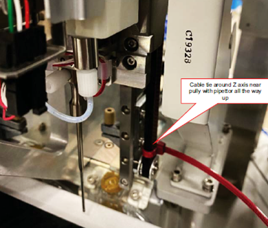
- From the front of the instrument, cut the cable tie around the bulk feeder pusher belt near the pulley.
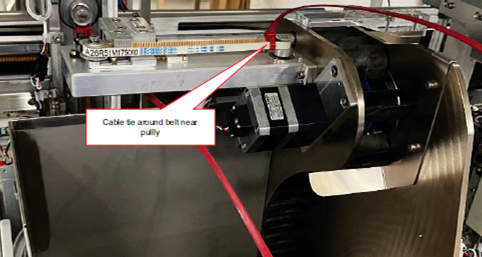
Important: The bulk feeder will contain product documentation, including the Certificate of Conformance. Deliver the documentation to the customer. - Cut the cable tie that constrains the Y-axis belt of the tip stocker near the pulley.
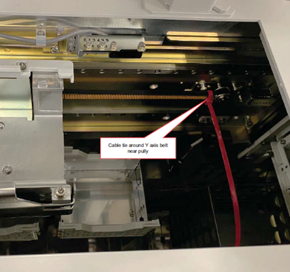
- Go to the rear of the tip stocker at the back of the instrument, and press the safety latch to release the tip stocker drawer.
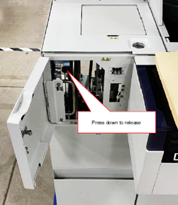
- At the front of the tip stocker, press down on the latch to release the tip stocker.
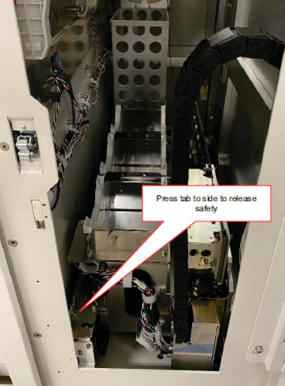
- Open the tip stocker drawer and the tip stocker.
- Cut the cable tie that constrains the Y-axis belt of the tip stocker.
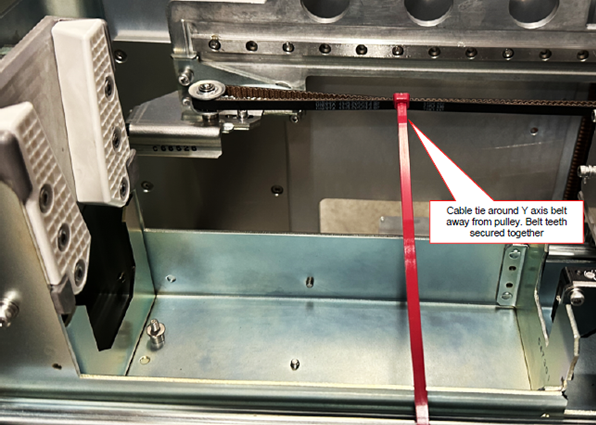
- Cut the cable tie on top of the tray gripper.
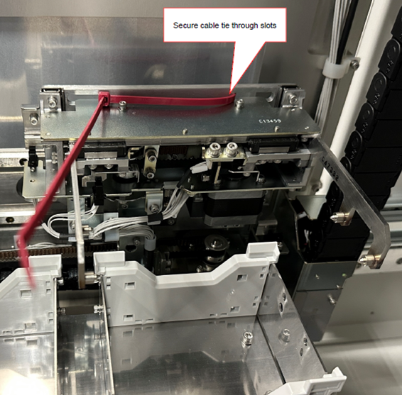
- Cut the cable tie that secures the tip stocker around the Z-axis belt near the pulley.
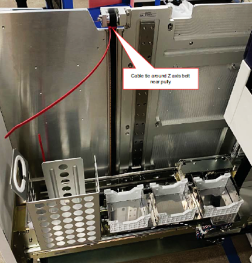
- Push the tip stocker drawer in to close it.
- Close the rear door of the tip stocker area.
- Close the top front cover door.
- Cut the two cable ties near the pulley that constrain the Z axis.
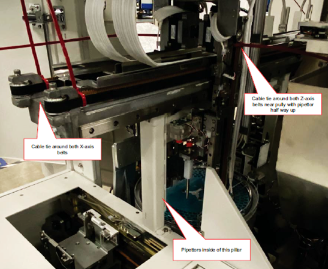
- Lower the pipettor gantry midway between the top and bottom.
- Cut the two cable ties around the X-axis belts.
- Move the aliquot and precision pipettors away from the tip stocker side of the chassis but inside of the pillar.
- Close the front left and dispo tip covers.
- Cut the cable tie around the pin and under the backside of the motor to release the bulk feeder supply carriage.
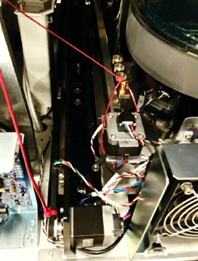
- Cut the cable tie around the Y axis belt near the pulley to release the SPU and presentation tray.
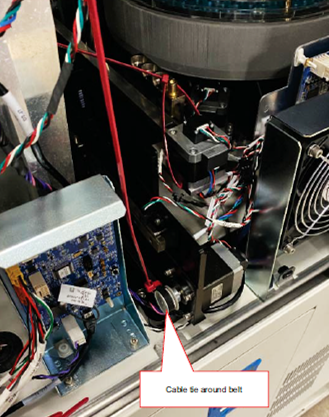
- Push the SPU to the front on the instrument.
- Remove the cable ties located around the pin and under the backside of the motor to release all four build carriages.
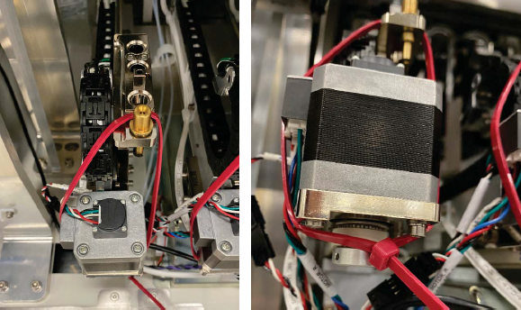
- Pull the four carriages to the front of the instrument.
- Release the X and Z axes of the sample pick and place (PnP) from the cable tie.
Important: During this procedure, after you remove cable ties for the pick-and-place gantries, manually move the gantries to be sure harnesses have been routed properly and so that there are no movement errors.
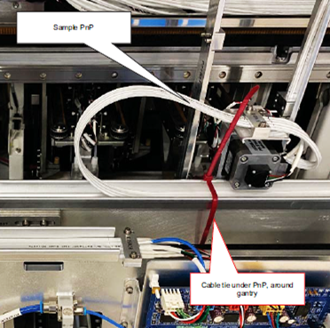
- Cut the cable tie routed under the incubate pick and place (PnP) and around the gantry to release the X and Z axes of the incubate pick and place (PnP).
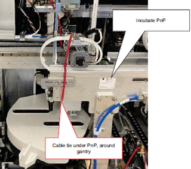
- Cut the two cable ties that constrain the X and Z axes of the analytic pick and place (PnP).
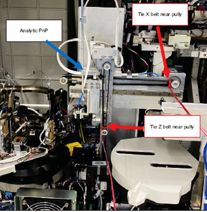
- Remove the colored masking tape from the Luminometer cap.
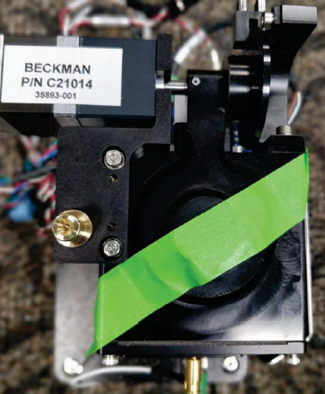